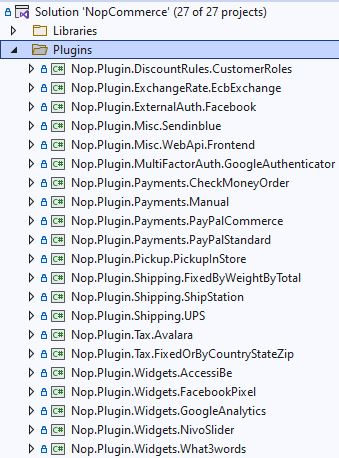

如何為 nopCommerce 編寫外掛
外掛用於擴充 nopCommerce 的功能。nopCommerce 擁有多種類型的外掛。例如，付款方式（如 PayPal）、稅額提供者、運送方式計算方法（如 UPS、USPS、FedEx）、小工具（如「線上客服」區塊）等等。nopCommerce 本身已經發行了許多不同的外掛。您也可以在 nopCommerce 官方網站 上搜尋各種外掛，看看是否已經有人開發出符合您需求的外掛。如果沒有，這篇文章將指引您完成建立自訂外掛的流程。
外掛結構、必要檔案與位置
您首先需要做的是在解決方案中建立一個新的
Class Library專案。將所有外掛放置在解決方案根目錄的\Plugins目錄中是一個良好的習慣（請勿與位於\Nop.Web目錄下、用於已部署外掛的\Plugins子目錄混淆）。將所有外掛放置在Plugins解決方案資料夾中也是一種良好的做法。外掛專案的建議命名方式為
Nop.Plugin.{Group}.{Name}。{Group}是您的外掛群組（例如 Payment 或 Shipping）。{Name}是您的外掛名稱（例如 PayPalStandard）。例如，PayPal Standard 付款外掛的名稱為：Nop.Plugin.Payments.PayPalStandard。但請注意，這並非強制規定，您可以為外掛選擇任何名稱，例如MyGreatPlugin。
當外掛專案建立完成後，您必須使用任何文字編輯器開啟其
.csproj檔案，並將其內容替換為以下內容：<Project Sdk="Microsoft.NET.Sdk"> <PropertyGroup> <TargetFramework>net6.0</TargetFramework> <Copyright>SOME_COPYRIGHT</Copyright> <Company>YOUR_COMPANY</Company> <Authors>SOME_AUTHORS</Authors> <PackageLicenseUrl>PACKAGE_LICENSE_URL</PackageLicenseUrl> <PackageProjectUrl>PACKAGE_PROJECT_URL</PackageProjectUrl> <RepositoryUrl>REPOSITORY_URL</RepositoryUrl> <RepositoryType>Git</RepositoryType> <OutputPath>..\..\Presentation\Nop.Web\Plugins\PLUGIN_OUTPUT_DIRECTORY</OutputPath> <OutDir>$(OutputPath)</OutDir> <!--Set this parameter to true to get the dlls copied from the NuGet cache to the output of your project. You need to set this parameter to true if your plugin has a nuget package to ensure that the dlls copied from the NuGet cache to the output of your project--> <CopyLocalLockFileAssemblies>true</CopyLocalLockFileAssemblies> </PropertyGroup> <ItemGroup> <ProjectReference Include="..\..\Presentation\Nop.Web.Framework\Nop.Web.Framework.csproj" /> <ClearPluginAssemblies Include="$(MSBuildProjectDirectory)\..\..\Build\ClearPluginAssemblies.proj" /> </ItemGroup> <!-- This target execute after "Build" target --> <Target Name="NopTarget" AfterTargets="Build"> <!-- Delete unnecessary libraries from plugins path --> <MSBuild Projects="@(ClearPluginAssemblies)" Properties="PluginPath=$(MSBuildProjectDirectory)\$(OutDir)" Targets="NopClear" /> </Target> </Project>Tip
其中 PLUGIN_OUTPUT_DIRECTORY 應替換為外掛名稱，例如
Payments.PayPalStandard。我們這樣做是為了能夠使用 .NET Core 中引入的新方法來加入第三方參考。但實際上這並非必要。此外，已參考函式庫的相關參考會被自動載入，因此非常方便。
下一步是建立每個外掛都必須具備的
plugin.json檔案。此檔案包含描述您外掛的中繼資訊。您只需從任何現有的外掛中複製此檔案，並根據您的需求進行修改即可。有關plugin.json檔案的詳細資訊，請參閱 plugin.json 檔案。最後一個必要步驟是建立一個實作
IPlugin介面（位於Nop.Services.Plugins命名空間）的類別。nopCommerce 提供了BasePlugin類別，它已經實作了一些IPlugin方法，可讓您避免原始程式碼重複。nopCommerce 也提供了一些衍生自IPlugin的特定介面。例如，我們有IPaymentMethod介面，用於建立新的付款方式外掛。它包含一些僅適用於付款方式的方法，例如ProcessPaymentAsync()或GetAdditionalHandlingFeeAsync()。目前，nopCommerce 擁有以下特定的外掛介面：IPaymentMethod。這些外掛用於處理付款。
IShippingRateComputationMethod。這些外掛用於擷取可接受的配送方式與對應的運費。例如 UPS、FedEx 等。
IPickupPointProvider。這些外掛用於提供取貨點。
ITaxProvider。稅務提供者用於取得稅率。
IExchangeRateProvider。用於取得貨幣匯率。
IDiscountRequirementRule。允許您建立新的折扣規則，例如「顧客的帳單國家/地區必須是……」。
IExternalAuthenticationMethod。用於建立外部驗證方式，例如 Facebook、Twitter、OpenID 等。
IMultiFactorAuthenticationMethod。用於建立多重驗證方式，例如 GoogleAuthenticator 等。
Note
這是一個新的介面，自 4.40 版本起，我們開箱即用地提供了對應的 MFA 整合基礎設施。
IWidgetPlugin。它允許您建立小工具。小工具會呈現在網站的某些區塊中。例如，網站左側欄位的「線上客服」區塊。
IMiscPlugin。如果您的外掛不適合上述任何介面。
Important
每次專案建置後，請在進行變更前清除解決方案。某些資源會被快取，這可能會導致開發過程中的困擾。
在加入外掛後，您可能需要重建您的解決方案。如果您在 Nop.Web\Plugins\PLUGIN_OUTPUT_DIRECTORY 下沒有看到外掛的 DLL 檔案，則需要重建解決方案。如果您的 DLL 檔案不存在於 Nop.Web 中的正確資料夾內，nopCommerce 將不會在「本機外掛」頁面中列出您的外掛。
處理請求：Controller、Model 與 View
現在，您可以前往 後台 → 設定 → 本地外掛 查看該外掛。但正如您所料，我們的外掛目前什麼都沒做，甚至連用於設定的使用者介面都沒有。讓我們建立一個頁面來設定此外掛。
我們現在需要做的是建立一個 Controller、一個 Model 和一個 View。
- MVC Controller 負責回應針對 ASP.NET Core MVC 網站的請求。每個瀏覽器請求都會對應到特定的 Controller。
- View 包含傳送給瀏覽器的 HTML 標記與內容。在使用
ASP.NET Core MVC應用程式時，View 就等同於頁面。 - MVC Model 包含應用程式中所有未包含在 View 或 Controller 中的邏輯。
您可以在 here 找到更多關於 MVC 模式的資訊。
那麼，讓我們開始吧：
建立 Model：在新的外掛中加入一個 Models 資料夾，然後加入一個符合您需求的 Model 類別。
建立 View：在新的外掛中加入一個 Views 資料夾，然後加入一個名為
Configure.cshtml的*.cshtml檔案。將該 View 檔案的 "Build Action" 屬性設為 "Content"，並將 "Copy to Output Directory" 屬性設為 "Copy always"。請注意，設定頁面應使用_ConfigurePlugin佈局。此外，請確保您的 \Views 目錄中有
_ViewImports.cshtml檔案。您可以直接從任何其他現有的外掛中複製它。建立 Controller：在新的外掛中加入一個 Controllers 資料夾，然後加入一個新的 Controller 類別。一個良好的實踐是將外掛 Controller 命名為
{Group}{Name}Controller.cs。例如：PaymentPayPalStandardController。當然，這並非強制性要求（僅為建議）。接著，為設定頁面（在後台區域中）建立適當的動作方法。讓我們將其命名為Configure。準備一個 Model 類別，並使用實體視圖路徑將其傳遞給 View：~/Plugins/{PluginOutputDirectory}/Views/Configure.cshtml。請為您的動作方法使用以下屬性：
[AutoValidateAntiforgeryToken] [AuthorizeAdmin] //confirms access to the admin panel [Area(AreaNames.Admin)] //specifies the area containing a controller or actionTip
您也可以直接將這些屬性加到 Controller 上。在這種情況下，就不需要為每個方法加上這些標籤。
例如，開啟
PayPalStandard付款外掛並查看其PaymentPayPalStandardController的實作方式。
接著，對於每個擁有設定頁面的外掛，您都應該指定一個設定 URL。名為 BasePlugin 的基底類別擁有 GetConfigurationPageUrl 方法，該方法會回傳設定 URL：
public override string GetConfigurationPageUrl()
{
return $"{_webHelper.GetStoreLocation()}Admin/{CONTROLLER_NAME}/{ACTION_NAME}";
}
其中 {CONTROLLER_NAME} 是您的 Controller 名稱，而 {ACTION_NAME} 是動作名稱（通常為 Configure）。
一旦您安裝了外掛並加入了設定方法，您就會在 後台 → 設定 → 本地外掛 下方找到一個用於設定此外掛的連結。
Tip
完成上述步驟最簡單的方法是開啟任何其他外掛，並將這些檔案複製到您的外掛專案中，然後重新命名對應的類別與目錄即可。
例如，PayPalStandard 外掛的專案結構如下圖所示：

處理 "InstallAsync"、"UninstallAsync" 與 "UpdateAsync" 方法
此步驟為選用。某些外掛在安裝過程中可能需要額外的邏輯。例如，外掛可能需要插入新的語系資源。請開啟您的 IPlugin 實作（大多數情況下它是繼承自 BasePlugin 類別）並覆寫下列方法：
- InstallAsync。此方法將在外掛安裝期間被呼叫。您可以在此初始化任何設定、插入新的語系資源，或建立新的資料庫資料表（如有必要）。
- UninstallAsync。此方法將在外掛解除安裝期間被呼叫。
- UpdateAsync。此方法將在外掛更新期間（當
plugin.json檔案中的版本號變更時）被呼叫。
Important
如果您覆寫了這些方法之一，請勿隱藏其基礎實作。
例如，覆寫的 InstallAsync 方法應包含下列方法呼叫：base.InstallAsync()。PayPalStandard 外掛的 InstallAsync 方法看起來如下列程式碼所示：
public override async Task InstallAsync()
{
await _settingService.SaveSettingAsync(new PayPalStandardPaymentSettings
{
UseSandbox = true
});
await _localizationService.AddLocaleResourceAsync(new Dictionary<string, string>
{
...
});
await base.InstallAsync();
}
Tip
已安裝外掛的清單位於 \App_Data\plugins.json。此清單會在安裝過程中建立。
路由
在這裡，我們將探討如何註冊外掛路由。ASP.NET Core 路由負責將傳入的瀏覽器請求對應到特定的 MVC 控制器動作。您可以參閱 here 取得更多關於路由的資訊。請按照下列步驟進行：
如果您需要加入自訂路由，請建立 RouteProvider.cs 檔案。它會將外掛路由資訊通知給 nopCommerce 系統。例如，以下的 RouteProvider 類別新增了一個新路由，您可以透過開啟網頁瀏覽器並導向 http://www.yourStore.com/Plugins/PaymentPayPalStandard/PDTHandler 這個 URL 來存取（此路由由 PayPal 外掛所使用）：
public partial class RouteProvider : IRouteProvider
{
public void RegisterRoutes(IEndpointRouteBuilder endpointRouteBuilder)
{
//PDT
endpointRouteBuilder.MapControllerRoute("Plugin.Payments.PayPalStandard.PDTHandler", "Plugins/PaymentPayPalStandard/PDTHandler",
new { controller = "PaymentPayPalStandard", action = "PDTHandler" });
}
public int Priority => -1;
}
升級 nopCommerce 可能會導致外掛失效
部分外掛可能會因為過時而無法在新版本的 nopCommerce 中運作。如果您在升級至新版本後遇到問題，請刪除該外掛，並前往 nopCommerce 官方網站查看是否有提供新版本。許多外掛開發者會更新其外掛以相容於新版本，然而，有些開發者則不會，導致其外掛因 nopCommerce 的功能改善而過時。但在大多數情況下，您可以直接開啟對應的 plugin.json 檔案，並更新 SupportedVersions 欄位。
結論
希望這些內容能協助您開始使用 nopCommerce，並為您打造更複雜的外掛做好準備。
外掛範本
您可以使用我們提供的 Visual Studio 範本來建立新的 nopCommerce 外掛。這可以為開發者節省大量時間，因為現在他們不必手動執行所有初始步驟。例如：資料夾建立（Controllers、Views、Models 等）、其他必要檔案（DependencyRegistrar.cs、_ViewImports.cshtml、ObjectContext、plugin.json 等）、設定、專案參考等等。請參閱相關說明與安裝指示 here